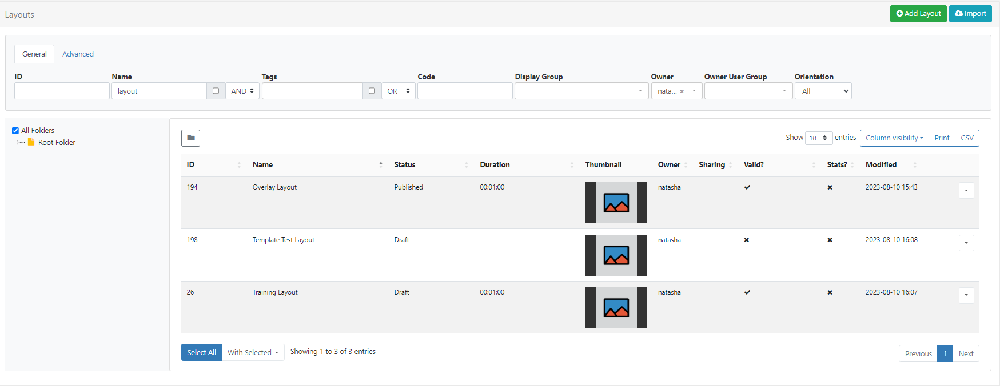

Layouts
A Layout is a complete screen design made up of content, which is then scheduled to one or multiple Displays. A Layout can contain 1 or more items of content to show using a combination of Elements, Widgets and Library Media.
To show a sequence of multiple items (such as an image slideshow) on Layouts, a Playlist is used.
Senevo has no limit to the number of Layouts you can have in the system or the number a User can have.
- Layouts are managed by clicking on Layouts under the Design section of the main CMS menu:

Folders are used to organise, search and easily Share User objects with other Users/User Groups. Layouts saved to a Folder will inherit the access options applied to that Folder.
If Users should also have access to the content of the Layout (image media files for example), ensure that these are also saved to the same Folder!
- Click on a Folder/sub-folder to search the contents or tick All Folders to include searching in the Root Folder and return results based on any filters applied to the grid.
Adding Layouts
When should a User create a new Layout? When should a User add to an existing Layout? Layouts provide vast flexibility in the system. The recommended usage for a Layout is for it to only contain the design and media required for a set of related content that should be scheduled at the same time.
Scenario: You have a video showing a fire safety demonstration and a video showing an advert for an upcoming production - it would be natural to have separate Layouts for these.
Click on the Add Layout button at the top of the grid to start creating new designs using the Layout Editor.
Using Templates
Templates are an easy way to speed up the design process and a great way to maintain a corporate image/standard.
Templates can be selected from the Toolbar inside the Layout Editor on adding a Layout.
Resolutions
Layouts are designed for an intended display resolution and will function best when shown on a Player with a matching resolution. If they are shown on a display that has a different resolution it will dynamically resize which may result in unused screen space.
Sending a Player a Layout that has been designed with a 4:3 resolution which is connected to a 16:9 TV screen would result in two empty bars either side of your content.
Resolutions are selected for a Layout from the properties panel in the Layout Editor.
Senevo comes with a selection of default resolutions that cater for most digital signage applications.
Resolutions can be added/edited and enabled/disabled by an Administrator from the Resolutions page under the Design section of the main CMS menu.
Row menu
All Layouts have a row menu where Users can access a list of actions/shortcuts.
Notable settings are listed below for a Published Layout:
Design
Select to make design changes to the Layout in the Layout Editor.
When in a Published status, the Layout Editor will open in a Read Only Mode. You will need to ‘Checkout’ the Layout to enable editing.
To prevent two Users editing the same Layout concurrently, the Layout will lock for a User whilst editing.
Checkout
To make edits to a Published Layout click to Checkout and create a draft. Once edited the Layout can be published to make the changes permanent overwriting the existing Layout. Discard will revert the Layout back to its original published state.
Users can select the ‘auto submit’ check box so that this form is automatically sent each time that Checkout is selected.
Take your time with any edits you need to make as using Checkout ensures that no changes are made to your published version or shown on scheduled Displays until you choose to do so. Publish confirms changes have been made and will overwrite your published version. Discard will delete the draft with the published version remaining untouched.
Preview Layout
The Published Layout will play from start to finish to allow you to see how it will play once scheduled.
Before the Layout can start all Media must be downloaded to your browser and verified so you may experience a slight delay whilst this is in process.
Assign to Campaign
Select to add the selected Layout to an existing Campaign.
Copy
Create copies of designed Layouts to easily make modifications. Choose to include all contained Media items, to use as a base for creating new Layouts to save time.
Copying a Layout will create an exact copy at the last point the Layout was Published so ensure that you Publish a Layout before making a copy to preserve any changes!
Retire
Retire a Layout so it does not affect existing Schedules. A retired Layout will be hidden from new Scheduling options but will remain unaffected in existing Schedules and continue to show on Displays.
Export
Export the Layout including all associated Widgets/Media/DataSet structures to a ZIP file, so it can be easily shared.
When exporting a Layout, all assigned Layout, Playlist and Media Tags will be exported. Select the Import Tags option to add these Tags on Layout Import. Add the ‘Export’ Feature to allow a User/User Group to export regardless of the Share options that have been set for the Layout and its contents!
Notable settings are listed below for a Draft Layout:
Publish
Select to Publish Now or select a date and time to set the Layout to Publish at a future date/time.
Administrators can use the default setting on the CMS Settings page to automatically Publish draft Layouts 30 minutes after the last edit!
Discard
Discard all changes made to a draft and revert back to the previous Published version.
Preview Draft Layout
Play a Preview of your Layout in its current Draft status. Make any necessary adjustments before committing any changes by Publishing.
Did you know….Layouts and Library files can be Assigned directly to a Display or Display Group so that they are always available in the local library of the Player. Useful for pre-loading a Layout ahead of time ready to be scheduled.
Use the With Selected option at the bottom of the Layout grid to edit Tag assignments in bulk!